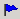
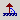
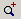
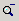

Toolbar
The Orbisnap toolbar has buttons for some of the more commonly used operations available from the menu bar. These buttons include:
- Drop-down list that displays all the viewpoints in the virtual world
- Return to viewpoint button
- Create viewpoint button 
- Straighten up button 
- Drop-down list that displays the navigation options
Walk, Examine, and Fly.
- Undo move button
- Zoom in/out buttons , 
 | Menu Bar | | Navigation Panel |  |